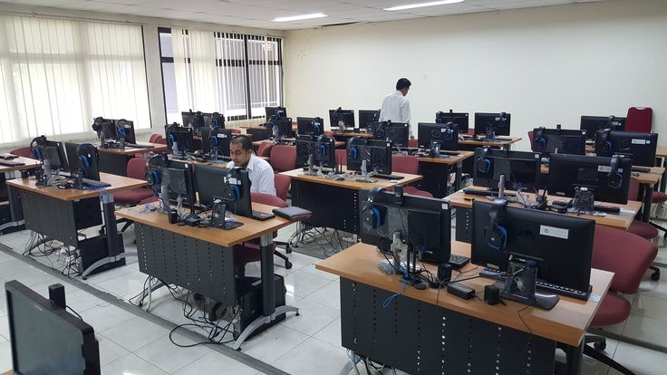

Penulis: Tim Akademik D3 Teknik Informatika
Lokasi: Laboratorium Komputer 2, Gedung D JTK Politeknik Negeri Bandung
Mahasiswa D3 Teknik Informatika mengadakan lokakarya web dasar untuk meningkatkan keterampilan pengembangan web. Kegiatan ini mencakup pembelajaran HTML dan CSS. Mahasiswa diminta untuk memahami konsep dasar pengembangan web, termasuk struktur halaman web, penggunaan tag HTML, dan penerapan CSS untuk mempercantik tampilan. Dengan kriteria sebagai berikut:

Latar Belakang Kegiatan
Lokakarya ini bertujuan untuk memberikan pemahaman praktis kepada mahasiswa tentang pengembangan web dasar. Dengan keterampilan ini, mahasiswa dapat membuat halaman web sederhana dan memahami prinsip-prinsip desain web. Kegiatan ini juga bertujuan untuk meningkatkan kemampuan mahasiswa dalam mengelola konten web, memahami struktur HTML, dan menerapkan gaya visual menggunakan CSS. Dengan demikian, mahasiswa akan memiliki dasar yang kuat untuk mengembangkan keterampilan lebih lanjut dalam pengembangan web.Kegiatan diselenggarakan untuk memperkuat fondasi sebelum mahasiswa mempelajari framework dan pengembangan aplikasi yang lebih kompleks.